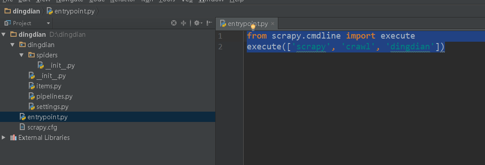

Scrapy 基础命令
安装、基本命令
pip install scrapy scrapy startproject XXXXX XXXXX代表你项目的名字
Scrapy架构图

组件： scrapy Engine: 负责组件之间数据的流转，当某个动作发生时触发事件 scrapy Scheduler: 负责接收引擎发送过来的requests请求，并按一定方式入队，等待引擎调度 scrapy Downloader: 负责抓取网页，并将其获取到的responses交还给引擎，引擎交给Spiders处理 scrapy Spider: 用户编写可定制化的部分，负责解析responses，产生items和URL scrapy Pipline: 负责处理item，用途：清洗、验证、持久化 Downloader Middlewares：位于引擎和下载器之间的一个钩子，处理传送到下载器的requests，和传送到引擎的response Spider Middleware: 位于引擎和抓取器之间的一个钩子，处理进入Spider的Responses，出去的requests
运行过程；
1.引擎打开一个网站，接到处理该网站的Spider，并向该Spider请求第一个要爬取的url
2.引擎从spider中获取到第一个URL，请求调度器以request调度
3.引擎向调度器请求下一个url
4. 调度器返回要爬取的url给引擎，引擎将URL通过下载中间件转发给下载器
5.一旦页面下载完毕，下载器生成一个该页面的response，并将其通过下载中间件发送给引擎
6.引擎从下载器中接受到response并通过spider中间件发送给spider处理
7.spider处理response并返回爬取到的item及新的request给引擎
8.引擎将爬取到的item给Pipline,requests给调度器
9.重复第二步，直到调度器中没有request可调度，引擎关闭该网站
步骤：items.py定义字段->spiders文件夹中编写spider.py->pipelines.py中存储数据->settings.py文件(可选)
建议在settings.py中取消下面几行的注释： # Enable and configure HTTP caching (disabled by default) # See http://scrapy.readthedocs.org/en/latest/topics/downloader-middleware.html#httpcache-middleware-settings HTTPCACHE_ENABLED = True HTTPCACHE_EXPIRATION_SECS = 0 HTTPCACHE_DIR = 'httpcache' HTTPCACHE_IGNORE_HTTP_CODES = [] HTTPCACHE_STORAGE = 'scrapy.extensions.httpcache.FilesystemCacheStorage' 这几行注释的作用是，Scrapy会缓存你有的Requests!当你再次请求时，如果存在缓存文档则返回缓存文档，而不是去网站请求，这样既加快了本地调试速度，也减轻了 网站的压力
Scrapy默认是不能在IDE中调试的，我们在根目录中新建一个py文件叫：entrypoint.py；在里面写入以下内容：
from scrapy.cmdline import execute execute(['scrapy', 'crawl', 'dingdian'])
response.meta[key]：这个是提取从上一个函数传递下来的值
return item 就是返回我们的字典了，然后Pipelines就可以开始对这些数据进行处理
定义字段
class DingdianItem(scrapy.Item):
# define the fields for your item here like:
# name = scrapy.Field()
name = scrapy.Field()
author = scrapy.Field()
noveurl = scrapy.Field()
serialstatus = scrapy.Field()
serialnumber = scrapy.Field()
category = scrapy.Field()
name_id = scrapy.Field()
编写spider
....
自定义pipline
建立xxxPipline类(继承object)->def process_item(self,item,spider)->在settings中设置ITEM_PIPLINES
class DingdianPipeline(object):
def process_item(self, item, spider):
if isinstance(item,DingdianItem):
name = item['name']
xxxxxx
if isinstance(item,XXXXXXX):
xxxxxxx
return item
open_spider(self, spider)
close_spider(self, spider)
from_crawler(cls, crawler)
If present, this classmethod is called to create a pipeline instance from a Crawler. It must return a new instance of the pipeline. Crawler object provides access to all Scrapy core components like settings and signals; it is a way for pipeline to access them and hook its functionality into Scrapy.
CrawlSpider
from scrapy.spiders import CrawlSpider, Rule, Request ##CrawlSpider与Rule配合使用可以骑到历遍全站的作用、Request干啥的我就不解释了
from scrapy.linkextractors import LinkExtractor ##配合Rule进行URL规则匹配
from haoduofuli.items import HaoduofuliItem ##不解释
from scrapy import FormRequest ##Scrapy中用作登录使用的一个包
class myspider(CrawlSpider):
name = 'haoduofuli'
allowed_domains = ['haoduofuli.wang']
start_urls = ['http://www.haoduofuli.wang']
rules = (
Rule(LinkExtractor(allow=('\.html',)), callback='parse_item', follow=True),
)
def parse_item(self, response):
print(response.url)
pass
Downloader Middleware
1.编写一个类，类中定义process_request(self,request,spider):xxxxxxxx return none\response\request\raise IgnoreRequest 当每个request通过下载中间件时，该方法被调用，这里有一个要求，该方法必须返回以下三种中的任意一种：None,返回一个Response对象，返回一个Request对象或raise IgnoreRequest。三种返回值的作用是不同的。 None:Scrapy将继续处理该request，执行其他的中间件的相应方法，直到合适的下载器处理函数(download handler)被调用,该request被执行(其response被下载)。 Response对象：Scrapy将不会调用任何其他的process_request()或process_exception() 方法，或相应地下载函数；其将返回该response。 已安装的中间件的 process_response() 方法则会在每个response返回时被调用。 Request对象：Scrapy则停止调用 process_request方法并重新调度返回的request。当新返回的request被执行后， 相应地中间件链将会根据下载的response被调用。 raise一个IgnoreRequest异常：则安装的下载中间件的 process_exception() 方法会被调用。如果没有任何一个方法处理该异常， 则request的errback(Request.errback)方法会被调用。如果没有代码处理抛出的异常， 则该异常被忽略且不记录。 2.定义process_response(request, response, spider):xxxxxxx return response对象，request对象，或者raise一个IgnoreRequest异常 如果其返回一个Response(可以与传入的response相同，也可以是全新的对象)， 该response会被在链中的其他中间件的 process_response() 方法处理。 如果其返回一个 Request 对象，则中间件链停止， 返回的request会被重新调度下载。处理类似于 process_request() 返回request所做的那样。 如果其抛出一个 IgnoreRequest 异常，则调用request的errback(Request.errback)。 如果没有代码处理抛出的异常，则该异常被忽略且不记录(不同于其他异常那样)。 3.def process_exception(request, exception, spider): xxxxx return 返回 None 、 一个 Response 对象、或者一个 Request 对象。 当下载处理器(download handler)或 process_request() (下载中间件)抛出异常(包括 IgnoreRequest 异常)时，Scrapy调用 process_exception()。 如果其返回 None ，Scrapy将会继续处理该异常，接着调用已安装的其他中间件的 process_exception() 方法，直到所有中间件都被调用完毕，则调用默认的异常处理。 如果其返回一个 Response 对象，则已安装的中间件链的 process_response() 方法被调用。Scrapy将不会调用任何其他中间件的 process_exception() 方法。 如果其返回一个 Request 对象， 则返回的request将会被重新调用下载。这将停止中间件的 process_exception() 方法执行，就如返回一个response的那样。 这个是非常有用的，就相当于如果我们失败了可以在这里进行一次失败的重试，例如当我们访问一个网站出现因为频繁爬取被封ip就可以在这里设置增加代理继续访问 Python爬虫从入门到放弃（十七）之 Scrapy框架中Download Middleware用法
Spider Middleware
process_spider_input(response, spider) return None or raise an exception. process_spider_output(response, result, spider) return an iterable of Request, dict or Item objects process_spider_exception(response, exception, spider) return either None or an iterable of Response, dict or Item objects. process_start_requests(start_requests, spider) return another iterable of Request objects.